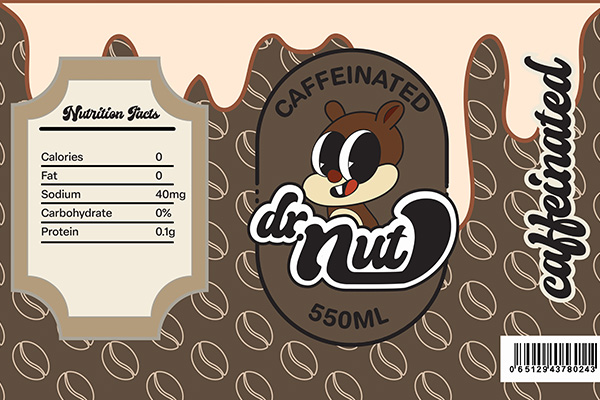
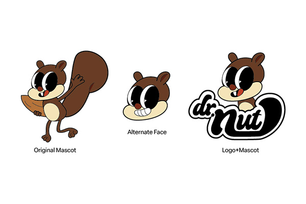
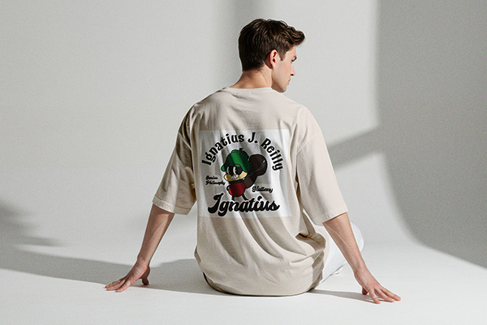
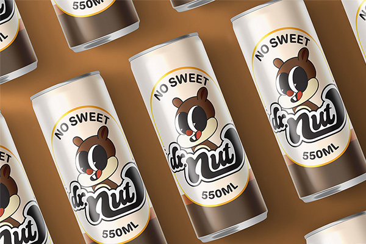
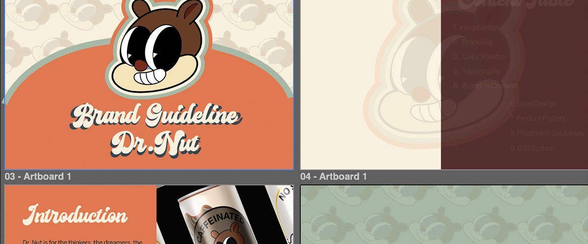

Dr.Nut Rebranding
This was the project that I had the most fun with in Summer Sem of 2025. It includes a whole rebranding of several "dead" brands, and the professor challenged us to find a way a re-new it. I chose Dr.Nut, well, because of the name overall, it was funny and had a ring to the ear. Just like the Gekk Earbuds project, I also scrapped the idea of the first logo, and then went ahead and created a new one. I was then sastisfied with the result. In the end, I gained a lot of fun time, first of all, and also how to create a brand guidline from scratch!
Dr.Nut Promotional Video
The Hall of Fame
A gallery showing my work in process and products





Case Study
The steps, the struggles, and the success
Problem Statement
Dr.Nut was a beloved soda brand from the 1960s that faded into obscurity by the 1970s. The challenge was to resurrect this "dead" brand and give it a fresh identity that could compete in today's market. My first logo attempt fell short—it lacked the visual appeal and energy needed to bring this nostalgic brand back to life. As my professor Jarrod pointed out, the initial color scheme lacked the vibrancy necessary to connect with customers and stand out on store shelves.
Research and Findings
I dove deep into the history of Dr.Nut and 1960s soda branding, studying what made brands from that era memorable. My research revealed that successful beverage brands balance nostalgia with modern appeal—they need to feel familiar yet fresh. I also analyzed current market trends and discovered that retro-inspired designs with vibrant colors perform exceptionally well, especially when targeting a broad audience from children to adults. The key insight was that friendliness and fun needed to be at the core of the rebrand.
Solution
I scrapped the original logo and started fresh with a completely new direction—embracing a retro aesthetic with significantly more vibrant colors that pop off the shelf. The new logo prioritizes fluidity and friendliness, making it approachable for all ages while honoring the brand's 1960s roots. I developed a comprehensive brand package: a detailed brand guideline document ensuring consistency, eye-catching can label designs ready for production, promotional posters that capture the fun spirit of the brand, and a dynamic promotional video crafted in After Effects. The 3D can mockups were rendered in Cinema 4D, while the entire visual identity was designed in Figma and Illustrator, with a website built using HTML, CSS, and JavaScript to showcase the rebrand.
A comprehensive rebranding journey—from researching a forgotten 1960s soda to delivering a complete brand identity system including logo, guidelines, packaging, promotional materials, motion graphics, and a showcase website.
Tools Used
My creative toolbox for this project
You're still here?
Yippie, that means that my work resonates with you, and we're ready to be (work) besties! Let your email here and I will reach you within 24 hours!
Or reach out directly at contact page